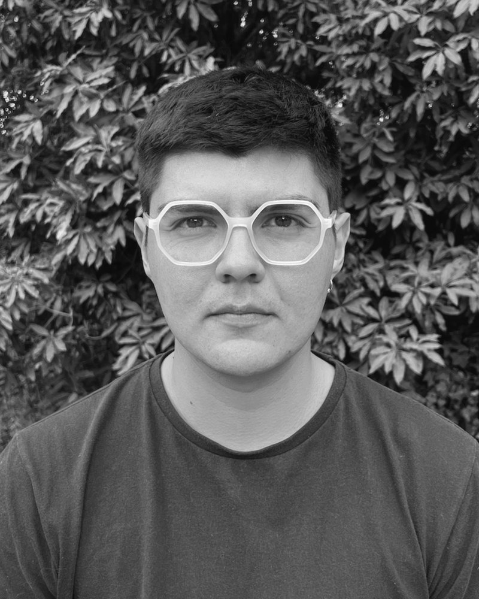

Convenors
2026–2027 convenors
This year’s convenors carry the theme Otherwise Urban.
-
Micaela Mancini
Gran Sasso Science Institute (GSSI), L’Aquila
Research on urban mobility and the 15-minute city.
-

Alonso López
The New School for Social Research
PhD student in Sociology. Research on autoconstruction, urban citizenship and informal settlements.